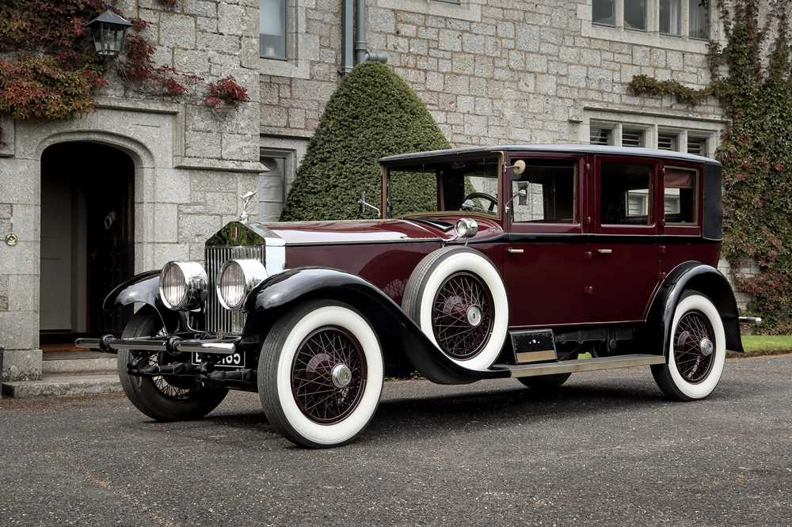

C A R S
VINTAGE
Mercedes-Benz 300 SL
The Mercedes-Benz 300 SL is a two-seat sports car that was produced by Mercedes-Benz from 1954 to 1957 as a gullwinged coupé and from 1957 to 1963 as a roadster.
Rolls-Royce Phantom I
The Rolls-Royce Phantom was Rolls-Royce's replacement for the original Silver Ghost. Introduced as the New Phantom in 1925, the Phantom had a larger engine than the Silver Ghost and used pushrod-operated overhead valves instead of the Silver Ghost's side valves
BMW E9
The BMW E9 is a range of coupés produced from 1968 to 1975. Initially released as the 2800 CS model, the E9 was based on the BMW 2000 C / 2000 CS four-cylinder coupés, which were enlarged to fit the BMW M30 six-cylinder engine
Aston Martin DB5
The Aston Martin DB5 is a British grand tourer produced by Aston Martin and designed by Italian coachbuilder Carrozzeria Touring Superleggera. Originally produced from 1963 to 1965, the DB5 was an evolution of the final series of DB4
Ferrari 250 GTO

The Ferrari 250 GTO is a grand tourer produced by Ferrari from 1962 to 1964 for homologation into the FIA's Group 3 Grand Touring Car category. It was powered by Ferrari's Tipo 168/62 Colombo V12 engine
CURRENT
Maybach S-Class
Serenity and uniqueness characterise the design. Underlined by the mighty chrome radiator grille with "Maybach" lettering and the bonnet trim on the powerful front section.
Rolls-Royce Phantom II

The Rolls-Royce Phantom was Rolls-Royce's replacement for the original Silver Ghost. Introduced as the New Phantom in 1925, the Phantom had a larger engine than the Silver Ghost and used pushrod-operated overhead valves instead of the Silver Ghost's side valves
BMW X7
The BMW X7 is a full-sized luxury sport utility vehicle manufactured by BMW. It is BMW's largest and 2nd most expensive SUV in its line-up
Aston Martin DBX707

The Aston Martin DBX is a crossover SUV produced by British luxury car marque Aston Martin since 2020.It is the first SUV the company has made.It has been described as both a "full-sized" and as a "mid-sized" vehicle
Ferrari SF90

The car’s name encapsulates the true significance of all that has been achieved in terms of performance. The reference to the 90th anniversary of the foundation of Scuderia Ferrari underscores the strong link that has always existed between Ferrari’s track and road cars.
FUTURE
Vision AVTR
Ever wondered how a future car would look and feel? Well, Mercedes-Benz revealed its groundbreaking and futuristic concept car by the name Vision AVTR at the Consumer Electronics Show in Las Vegas, Nevada, in January 2020.
Rolls-Royce 103EX
For over 100 years, Rolls-Royce Motor Cars has been pushing the boundaries of luxury mobility. We have defied the impossible and engineered timeless works of art
BMW Vision 100
BMW is developing a modular platform for all its future cars. This flexible platform will be able to underpin various cars.
Aston Martin Valkyrie

To reiterate, the Valkyrie is the V12 mid-engine hypercar that costs like a billion dollars a will sit at the top of Aston’s new mode lineup, and the Valhalla slots under that with a similar design
Ferrari Gran Turismo

The Ferrari 250 GTO is a grand tourer produced by Ferrari from 1962 to 1964 for homologation into the FIA's Group 3 Grand Touring Car category. It was powered by Ferrari's Tipo 168/62 Colombo V12 engine